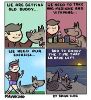

0

CISA is reportedly using Anthropic's Mythos model to scan government code repositories for security vulnerabilities, with sources saying the audits have already found numerous bugs. Reuters reports: The scanning is being done by CISA's Attack Surface Evaluation team, according to one of the sources. The team is a group within CISA that conducts digital security assessments and hacking exercises across government. Two of the sources said the audits had already uncovered a large number of vulnerabilities but did not elaborate. Reuters could not establish exactly how much government code the team had gone through or the nature or severity of the bugs it discovered.
[...] The National Security Agency, the U.S. government's powerful eavesdropping agency, has been using Mythos as far back as April despite the blacklist, Axios has reported. Late last month, the New York Times said that NSA analysts had been testing Mythos in classified settings and coming away impressed with its capabilities. But when Anthropic rolled out a public version of Mythos called Fable, which included what it described as cybersecurity safeguards, the White House suddenly demanded that it ban foreigners from running it. This triggered a global shutdown of the model that was lifted only last week.
Read more of this story at Slashdot.
0
GitHub is offering a limited run of 1,000 CD-ROM copies of public repositories as a pro-physical-media jab at Sony's plan to stop producing PlayStation game discs in 2028. Tom's Hardware reports: The coding and collaboration platform, owned by Microsoft, states that "In light of recent developments in physical media, GitHub is proud to announce that you can now obtain your public repo on CD-ROM." Moreover, it appeals to the human side of computing, adding the emotive line "Keep it. Lend it to friends. Pass it on to your children." It isn't April 1st, so thankfully this is no joke. However, if you check out the above-linked GitHub Your Code, On a CD offer page, it quickly becomes clear this is a very limited in time/scope stunt.
"Order a burned CD of your own public GitHub repo. Yes, a real physical disc you can hold in your hands, no download required," begins the spiel. But this is a very limited run of 1,000 discs, with applications required between July 2 and July 6 (inclusive). Limit one per person, with availability varying between country/region.
"Your code is physically yours, forever. Until you lose it, let's be real," says GitHub. At best, these CDs will be framed and put on a wall, some becoming collector's items or eBay money spinners (discs like 0001 or 0888 would be good ones, if they are numbered). Also, many will be lost or eventually/accidentally discarded, as GitHub seems to know. So this 'protest' is arguably 1,000 doses of expensively shipped e-waste.
Read more of this story at Slashdot.
An anonymous reader quotes a report from the New York Times: The number of students admitted to Ph.D. programs this fall dropped 15 percent from the previous year, according to data from over 50 top research universities, raising fears that the nation's capacity to produce new science could be diminished. The decline is driven, in part, by a chaotic and unpredictable federal funding environment under the Trump administration, as federal cuts are promised and then reversed, and budgets remain unclear.
A reduction in doctoral students could mean fewer scholars at universities to teach and mentor undergraduates. Higher education leaders also worry that, if the declines continue, there will be fewer researchers to power a rapidly evolving scientific work force. The data showing the decrease comes from 55 universities, all of them members of the Association of American Universities, an invitation-only organization that includes 69 of the most prestigious research institutions in the United States. The data collection was conducted by another group, the Association of American Universities Data Exchange.
Schools in A.A.U. confer half of the nation's research doctorates, according to the association. "We are at risk of losing a whole generation of new talent because of the reduction in the capacity to support those students," said Toby Smith, a senior vice president at the A.A.U. University leaders and research advocates cite many reasons for the declines in new doctoral students. Key federal agencies, such as the National Institutes of Health and the National Science Foundation, have been funding fewer research grants. The wealthiest institutions also face a new federal tax on their endowments.
But the most cited reason in interviews was the unreliable nature of federal funding under the Trump administration. The administration proposed major cuts to federal research agencies last year, but Congress restored the funding. It is again proposing big cuts. While Congress may again reverse the administration's proposed reductions, the uncertainty makes it hard for schools to make multiyear commitments to doctoral students. The administration also abruptly ended thousands of research grants last year, arguing that they did not align with the government's priorities. The administration restored many of the grants after judges deemed the eliminations illegal and arbitrary, but research advocates say the whiplash was damaging.
Read more of this story at Slashdot.
locater16 shares a report from IEEE Spectrum: One morning in 2019, Adebayo Alonge was in a Cape Town hotel room, preparing to demonstrate his startup's AI answer to a serious problem in African health care: counterfeit medication, which kills thousands of people across the continent every year. The RxScanner is a handheld spectrometer that scans a pill with infrared light, then sends the item's molecular profile to an AI model equipped with a pharmaceutical database. In seconds, the AI identifies the medication from its molecular profile -- or reports that it's phony.
Pharmacies were using the system in more than a dozen countries, including Ghana, Kenya, Myanmar, and Alonge's native Nigeria. But that morning in South Africa, it didn't work. "I was shocked," Alonge says... So Alonge immediately asked his engineers to shrink the AI model down to a smaller, low-power, unconnected version that could run entirely on his Android phone. They produced it 2 hours later, and that saved the demo. More importantly, the work birthed a new version of his device, which can authenticate a pill in places without broadband, computers, or even reliable electricity. It also turned Alonge into an advocate for this kind of "small AI." "The article goes on to detail other immediately useful 'small' AI applications without any subscription or billion dollar data centers needed," writes locator16. For example, Bala Murugan and colleagues at Vellore Institute of Technology in India developed a drone-based system that photographs cashew plants and identifies disease-indicating splotches on the plants. The key advantage is that all processing happens on the drone itself, so farmers do not need a computer, broadband connection, or cloud server access.
In a Uruguayan vineyard, researchers developed small-AI systems to identify ant infestations. The article doesn't go deep into the deployment details, but it presents this as another example of a narrow, localized model trained to recognize a specific agricultural threat. Small AI has also been used to detect the presence of malaria-carrying mosquitoes in multiple countries. This is especially useful in regions where public-health teams may lack reliable network access or expensive lab infrastructure, but still need fast, local detection.
In parts of Brazil without access to more complex medical equipment, researchers have used small AI to run electrocardiograms from an Arduino device. The article also describes Marcelo Jose Rovai's work on a TinyML model that generates electrocardiograms in a patient simulator lab. Rovai also describes a newer experiment using an Arduino UNO Q with a Qualcomm chipset. The device runs a language model locally, collects sensor data, and analyzes it to detect tiny pools of water where mosquitoes might breed -- while using only about 3 watts of power.
Read more of this story at Slashdot.
The long-running SCO/IBM Unix and Linux ownership dispute has resurfaced yet again, this time through SCO successor Xinuos, which is trying to pursue old license and copyright claims tied to Project Monterey. "The core issue seems to be whether Xinuos even has the right to litigate the matter, or if some ancient legalese in the original agreements means the window for legal argument has long since expired," reports The Register. From the report: [T]he roots of the case are the 1998 alliance between IBM and a company called the Santa Cruz Operation which sold a version of UNIX for x86 CPUs. Those two companies, plus Intel and Sequent, created "Project Monterey" -- an effort to create a unified version of UNIX that could run on multiple processors. By 2001, Project Monterey was close to delivering a unified UNIX, an achievement made possible by blending code from IBM and SCO.
By then, a little project called "Linux" already ran on multiple processors. Big Blue decided Linux was the future and bailed from Project Monterey -- then allegedly contributed some Monterey code to the open-source project and to its own AIX and Z operating systems. SCO felt it owned some of that code, so sued IBM.
SCO and its successors struggled to survive, but interested parties kept the lawsuit alive because the chance to emerge as owner of parts of the Linux codebase, and IBM's code, had the potential to turn into a colossal payday. The case and its successors ended in 2021, with a settlement that saw litigants agree to end the matter without IBM admitting fault. But by then, SCO had sold its software to a biz called Xinuos that decided to fight on.
The Xinuos case has burbled along quietly since, and on June 22nd reached the milestone of a hearing. The matter has become a little more modern, if only because this hearing was held online and the presiding judge appeared to unwittingly be on mute at one point. But the arguments otherwise seemed to revisit Project Monterey, debated the relevance of past litigation, contested who owned what, when they owned it, and how they could prove it. Xinuos argued IBM never had a license for SCO code. Big Blue argued that it did nothing wrong.
Read more of this story at Slashdot.
An anonymous reader quotes a report from Ars Technica: Anthropic quickly removed a tracker secretly monitoring Claude Code users in China after a security researcher exposed the hidden code and condemned the spyware-like tracking as a "serious breach of user trust." Last week, a web developer known as "Thereallo" was researching privacy issues in Claude Code and was shocked to find that the AI firm was using "prompt steganography" to hide code that tracks Chinese users "in plain sight." This code wasn't malicious, but it was sending information to Anthropic that most users wouldn't detect, relying on shorthand markers to quietly flag users' timezone, proxy, and potential connection to Chinese AI labs that Anthropic has accused of distillation attacks.
On X, Anthropic engineer Thariq Shihipar confirmed that the tracker was added to Claude Code as an "experiment" in March. According to Shihipar, the code "was meant to prevent account abuse from unauthorized resellers and protect against distillation." Regarding the former, The Washington Post found unauthorized retailers have sold access to free models for $1 a month, and pro subscriptions that can cost $100 monthly sell for "as little as $12." Supposedly, Anthropic has "actually been meaning to take this down for a while," Shihipar said of the hidden code, because engineers have "landed stronger mitigations since then."
Privacy advocates were not happy with the explanation, though, warning that the code is evidence that Anthropic is willing to cross lines to surveil users. That's perhaps especially surprising, considering that Anthropic riled the Trump administration by refusing to allow the US government to use Claude to surveil US users. The AI firm has since sued the White House over the clash. The Post suggested that the tracker incident is a sign that US firms like Anthropic are taking "increasingly aggressive measures" to block Chinese AI firms from copying their models. A more defensive stance has apparently become critical. In the past year, Chinese firms have "consistently matched" US firms' model capabilities "within months," the Post reported. Most recently, "a new, free AI model from Chinese company Zhipu AI was better at finding computer vulnerabilities than Anthropic's Claude Opus 4.8 model, which was released in May," the Post reported.
Read more of this story at Slashdot.
Microsoft is laying off about 4,800 employees, including 1,600 from Xbox, as it restructures around AI investments and tries to reset its struggling gaming business. "Our business is changing because the world around it is changing. The way technology is built, deployed, and used is transforming faster than at any point in my time here," said Amy Coleman, EVP and chief people officer at Microsoft. "Our customers' needs are shifting, the business models that serve them are shifting, and that means the work itself -- what we do, where we focus, and how we're organized -- has to transform too." She continued: "Companies don't get to choose whether their industry changes; they only get to choose whether they change with it. That means we will need to adjust resources and roles and shift how we operate so we can have the greatest impact for our customers." TechCrunch reports: Coleman stressed that the roles being eliminated today "are not being replaced by AI," but noted, "what is true is that AI is changing how work gets done." "Some of the tasks we do every day can now be automated, and that means we all need to keep learning, keep building new skills, and keep adapting as the work evolves," Coleman wrote. [...] Speaking about the Xbox layoffs, Coleman said little: "We are restructuring to position the business for long-term success. Engineering teams across the company will also evolve their structure and priorities to meet customer needs and innovate for the future."
Of today's 4,800 layoffs at Microsoft, 1,600 will hit Xbox, with about 3,200 cuts in total expected through fiscal year 2027, according to Asha Sharma, CEO of Xbox. In an email she sent to employees on Monday, Sharma called this "the most significant restructure in Xbox history." "Our business today is not healthy," Sharma wrote. "We are operating at margins that are 3-10x lower than comparable platform and publishing businesses." She added that Xbox made bets like its monthly subscription service Game Pass, alongside moves to grow its portfolio of content and invest in multi-platform, among other attempts to breathe life into the business. None of those strategies grew at the expected pace, leading to the core business weakening even as Xbox added more teams and investment. "And now the industry is facing the most severe hardware crisis in its history," Sharma said. "We must reset Xbox."
As part of the shift, Microsoft will transition four of its gaming studios to operate under new management, ensuring preservation of intellectual property and ongoing projects. Specifically Compulsion Games and Double Fine Productions will return to independent studios, according to Sharma. Ninja Theory and Undead Labs are coming under new ownership with funding to complete and grow some of their more popular games. According to Sharma's memo, Xbox is also flattening management hard, cutting the current 14 management layers to no more than five, but ideally three. As part of this major organization redesign, Xbox is making longtime executive Helen Chiang chief operating officer with end-to-end profit and loss authority across content, hardware, platform, and services. Xbox's restructuring plan centers around narrowing focus by dropping sprawling creative bets that don't produce platform-scale returns, and instead homing in on core strategic pillars like Mojang and King, the businesses behind Minecraft and Candy Crush.
Read more of this story at Slashdot.
Nintendo will stop selling the original Switch in Europe in mid-February 2027, nearly 10 years after the console's launch. In its place, the company will release updated versions of the Switch 2 and several controllers with user-replaceable batteries to comply with new EU regulations. The Verge reports: The news comes as Nintendo is making a bunch of changes to the rest of its lineup due to EU regulations requiring user-replaceable batteries. Starting this summer, the company says it will start introducing updated versions of various devices on "a rolling basis," ahead of the regulations coming into effect on February 18th, 2027. "There is no difference in functionality between current products and revised products containing user-replaceable batteries," Nintendo says.
The Switch 2 is the most notable product being updated -- the new version is expected to start rolling out in the fall -- but there will also be versions of the Joy-Con controllers, Joy-Con 2, Switch 2 Pro Controller, and N64 and GameCube Switch controllers with user-replaceable batteries. "Due to a variety of factors, revised products may not become available in all European countries simultaneously," Nintendo notes.
Read more of this story at Slashdot.
"A year ago, the message from many business leaders was that AI was going to wipe out jobs," remembers the Wall Street Journal.But "For the past month or so, tech CEOs have been striking a more optimistic tone."
In late May, OpenAI Chief Executive Sam Altman — who has long predicted that AI will lead to seismic shifts in the workforce — said during a conference, "We've been roughly right on technological predictions and pretty wrong on the social and economic implications." Soon after, he told CNBC, "Our industry underestimated how much we're going to be able to keep people at the center of everything."
Anthropic CEO Dario Amodei, who warned in May 2025 that artificial intelligence could eliminate half of entry-level jobs, a year later highlighted more positive scenarios for AI-adopting businesses: "They can do the same thing with less resources, and that leads to things like layoffs, or they can do more with the same amount of resources. But that requires creativity...."
Is the sunnier outlook a move to win back customers and the public who are souring on AI's world-upending promise? Or is the role of AI in the workplace now just better understood...?
Collectively, the narrative has shifted from worker-light doomsday scenarios caused by AI to a future in which workers keep their jobs — and get a productivity boost. The sentiment change isn't limited to tech leaders: A survey by EY-Parthenon found that the percentage of CEOs who believe AI investments will result in significant reductions in head count fell from around 46% in January 2025 to just 20% this May.
"They may have noticed that the labor market is genuinely not changing (i.e., imploding) as rapidly as they expected," said David Autor, a professor of economics at the Massachusetts Institute of Technology. "They may have realized it was simply bad business to say that your great new product will destroy the economy."
The article notes Amazon founder Jeff Bezos "has a history of predicting that AI will create new jobs," and in June said AI could even lead to a labor shortage. "When asked on CNBC in May about people being afraid of AI taking jobs, he said the reason they're afraid is because 'all these smart people keep saying that.'"
The article then adds that "Fewer people are saying it now."
Read more of this story at Slashdot.
USA Today reports on a Facebook post from a Washington state sheriff's office:
Four residents of Clallam County, a coastal region west of Seattle along northern Washington's peninsula, lost more than $673,000 in just three days, according to the Clallam County Sheriff's Office... The smallest amount lost was $3,500, which someone purchased in Apple gift cards for a scammer posing as an employee with Microsoft technical support, the sheriff's office wrote. Another person lost $50,000 after they clicked on a malicious email and unwittingly granted the scammers access to their financial accounts.
The local Peninsula Daily News reports another scam involved a 64-year-old resident who attempted to contact Coinbase after seeing their account displayed shown as closed:
"Believing they were speaking with a legitimate Coinbase representative, the victim was told there was fraudulent activity on the account and was instructed to download a 'rescue' application," the [sheriff's] release states. "The application allowed the scammer to remotely access the victim's phone." They then convinced the victim to transfer approximately $200,000 worth of cryptocurrency to what was described as a secure wallet. The funds were instead transferred to the scammer and could not be recovered...
In one scam, reported Monday, an 84-year-old Clallam County resident believed they had received an email from their daughter with a photo. After opening the email, a fake Microsoft security alert appeared on the computer directing the victim to call a support number, according to the release. "The victim was transferred to someone claiming to represent the Federal Trade Commission (FTC) and was falsely told they were under investigation in a child pornography and money laundering case," the release states. "The scammers instructed the victim not to contact local law enforcement and claimed local banks were also under investigation. The victim was told their bank accounts were in danger of being seized and was instructed to purchase gold to protect their assets." In three separate transactions, the victim purchased approximately $420,000 worth of gold and gave it to an unknown man waiting at the end of their driveway.
"Only after speaking with bank officials did the victim realize they had been defrauded," the release states.
USA Today offers this advice from the sheriff's press release. "These criminals are professional manipulators who prey on fear, trust and urgency. We encourage everyone to pause before sending money, purchasing gold or gift cards, or transferring cryptocurrency. A simple phone call to a trusted family member, your bank or local law enforcement can prevent a life-changing financial loss."
Read more of this story at Slashdot.
The Supreme Court allowed Texas to enforce a law requiring app stores to verify users' ages and obtain parental consent before minors can download apps. Tech industry groups argue the law broadly restricts young people's access to digital speech, but the court let a 5th Circuit order stand without explanation or noted dissents. CNN notes that the Supreme Court's decision "doesn't resolve the case but rather will allow Texas to enforce the law while the litigation continues to play out." From the report: "A minor child who downloads a software application from an app store agrees to contractual terms of service, including whether the child's location will be tracked, whether the child's privacy will be protected, whether information from the child's phone can be sold by the developer, and whether the child waives the right to sue," Texas told the Supreme Court in urging the court to allow its law to take effect.
But the Computer & Communications Industry Association, a trade group whose members include Apple and Google, said the law would effectively bar young people from accessing a wide range of content, "be it a book by Ernest Hemingway or J.K. Rowling, a Taylor Swift album, or a subscription to National Geographic." Allowing the law to take effect, the group said, would have "profound consequences for the protection of digital speech."
[...] In the new case, involving Texas' age verification for apps, a federal district court blocked the law's enforcement in December -- days before it was set to take effect. But a three-judge panel of the conservative 5th US Circuit Court of Appeals put that decision on hold in early June, allowing the state to enforce it. By declining to take up the emergency appeal from the computer and student groups, the Supreme Court has left the 5th Circuit's decision in place.
Read more of this story at Slashdot.
SK Hynix is launching a Nasdaq listing expected to raise about $28 billion, giving US investors easier access to one of the biggest beneficiaries of the AI memory-chip boom. Reuters reports: The company will sell 17.79 million new shares in the depository receipt listing on the Nasdaq. Ten ADRs will represent one common share and the stock will be sold in a price range that is due to be revealed on Monday, based on SK Hynix's Seoul trading price. SK Hynix's share price was down 4% at 2,327,000 won each on Monday, but the stock is up about 273% this year, as it rides surging global investor demand for AI stocks. Korea's KOSPI was down 2.2% on Monday. [...]
SK Hynix has been among the world's largest beneficiaries of the AI boom as it outperformed its major rivals Samsung and Micron. "This is more than a liquidity event," said Dave Mazza, the chief executive officer of Roundhill Investments in New York, which manages an exchange-traded fund tracking DRAM manufacturers, which is one of the most popular ways for U.S. investors to trade SK Hynix's stock. "SK Hynix has been one of the most important companies in the world that most U.S. institutions could not easily own." "The listing removes an accessibility discount, not a quality discount."
[...] SK Hynix said the proceeds from the listing of the American Depositary Receipts will be used to build chip factories in South Korea and buy chipmaking equipment including an extreme ultraviolet scanner made by Dutch equipment maker ASML. The final price of the New York listing is due to be set on Thursday, ahead of the stock starting trade on Friday, regulatory filings showed. The company's management will meet global investors on a roadshow this week. The deal is expected to be the second-biggest share sale after a record $85.7 billion initial public offering by SpaceX last month, surpassing Saudi Aramco's $25.6 billion IPO in 2019 and Alibaba's similar-sized offering in 2014.
Read more of this story at Slashdot.
Americans now spend an average of 35 minutes a day socializing, down from 45 minutes two decades ago, according to American Time Use Survey data. The decline spans all age groups but is sharpest among 15- to 24-year-olds, whose daily socializing has fallen from about an hour to 35 minutes. Axios reports: Sociologists and psychologists point to several trends driving this phenomenon, which Substack writer Derek Thompson dubbed "The Anti-Social Century" in the Atlantic last year. We're all on our smartphones, often interacting through screens instead of face to face -- even though social media is no substitute for spending time together in person.
Teens, in particular, spend an average of 4.8 hours a day on apps like TikTok, Instagram and Snapchat, according to Gallup. The shift to remote work -- and life -- during the pandemic has persisted, keeping more of us homebound. Longer-term trends are reshaping daily life in ways that make isolation easier. Homes are bigger and more comfortable, with larger TVs. Virtually every restaurant is on a food delivery app, making it easier than ever to stay in.
Also contributing to the trend is the decline of gathering spaces, Axios' Avery Lotz writes. A 2025 report from CU Boulder researchers uncovered widespread closures of all kinds of hangout spots -- from libraries to coffee shops to museums -- in the last decade or so. Churches are also shuttering at unprecedented rates, Axios' Russell Contreras reports.
Read more of this story at Slashdot.
Google was ordered to pay almost $2 billion this week to Pricerunner, reports Bloomberg:
The Patent and Market Court in Stockholm, which issued the judgment on Wednesday, dismissed most parts of the claim in which Pricerunner sought 80 billion Swedish kronor, or roughly $8.2 billion, in the wake of a European Union antitrust crackdown... The Swedish price-comparison website argued that Google has been abusing its dominant position as a search engine by favoring its own comparison shopping service over competing portals for more than a decade. Wednesday's award compensates for lost revenue caused by Google's preferential treatment of its own comparison-shopping service over independent price-comparison services, conduct that also drives up costs for consumers, [Pricerunner owner] Klarna said in a statement after the judgment...
A Google spokesperson said the company doesn't agree with the court's decision and will consider its legal options. [The ruling can be appealed.] Changes implemented in 2017 to Google's platform are working and generating growth and jobs for hundreds of comparison shopping services operating more than 1500 websites across Europe, according to the statement.
The litigation is linked to a 2017 decision by the European Commission to fine Google €2.4 billion for illegally leveraging its search dominance to give its own shopping service an edge. The EU decision unleashed a wave of so-called follow-on suits, which were delayed for years as Google appealed the EU fine. Two years ago the EU's top tribunal confirmed that the company did violate antitrust laws — meaning EU-based plaintiffs no longer have to prove that in court. A Berlin court last year ordered the tech giant to pay €573 million in damages to two German price-comparison websites, a ruling Google appealed. Similar cases are pending across Europe.
Read more of this story at Slashdot.
Australia plans to double fines for social media platforms that fail to keep under-16s off restricted services, after regulators found 70% of children with accounts remained active three months after the ban took effect. The government says the changes will also give the eSafety Commissioner more power to demand information from platforms and age-assurance providers as teens continue finding ways around the law. Euronews reports: The government said Sunday it would introduce draft legislation this week doubling the maximum penalty to 99 million Australian dollars (63 million euros) for platforms -- including Facebook, Instagram, Snapchat and TikTok -- that do not take reasonable steps to comply with the ban, which became law on 10 December. Communications Minister Anika Wells blamed the platforms directly. "We can all agree we would like the scheme to work better than it is currently, but that is on Big Tech taking the Mickey," she said, speaking to the Australian Broadcasting Corp on Monday. Wells added that she had received monthly updates from the online safety regulator since March and "we are not seeing improvements."
The amendments would also expand the powers of eSafety Commissioner Julie Inman Grant to demand information and documents from platforms -- and from third parties such as age assurance technology providers -- to test claims made by companies about how under-16s continued to circumvent the ban. The government had initially reported more than 5 million children had accounts removed, deactivated or restricted after the legislation passed. But eSafety found in March that 70% of children who held accounts on restricted platforms on the day the ban took effect remained active on Facebook, Instagram, Snapchat and TikTok.
Inman Grant said in April she was considering court action against those platforms and YouTube, alleging they were not taking reasonable steps to exclude children. She said she was satisfied with progress made by the remaining restricted platforms: X, Kick, Reddit, Threads and Twitch. Senior opposition lawmaker Jane Hume said her party would consider supporting the reforms, but pinned blame on the original legislation. "The legislation was clearly undercooked in the first place. The eSafety Commissioner wasn't given the powers to be able to pursue these Big Tech companies," she said.
Read more of this story at Slashdot.
Byron Kaye / Reuters : Study: 50 test accounts created in Australia on nine platforms were never prompted for age verification despite the Australian law mandating a ban on under-16s — Australia's online platforms are stumbling at the very first step in implementing age checks for users, rendering a world …
Sam Schechner / Wall Street Journal : UN Secretary-General António Guterres calls for autonomous “killer robots” to be “banned by international law”, a central issue in the US DOD-Anthropic clash — António Guterres labels lethal autonomous weapons ‘morally repugnant,’ resurfacing issue …
Guinevere Grant / Bloomberg : Norm, which runs an AI law firm that provides AI-powered legal services to clients alongside human lawyers, raised $120M led by Khosla at a $1.2B valuation — Norm Ai has raised $120 million from investors in a new funding round to help automate legal services and rethink how the industry bills for its work.
Brian Danga / The Block : Coinbase secures UK FCA authorization to offer investment services, enabling it to expand into derivatives and equities trading, its largest UK expansion yet — Quick Take — Coinbase has secured a UK investment services license, allowing it to expand beyond crypto with derivatives and equities trading.
Bloomberg : Sources: Amazon is looking to raise at least $25B from a US dollar bond sale to fund its AI infrastructure investments; the size could increase based on demand — Amazon.com Inc. is looking to raise at least $25 billion from a US dollar bond sale, its latest funding push as the company ramps …
Benoit Berthelot / Bloomberg : Paris-based UMA, founded by ex-Tesla Optimus scientist Rémi Cadene and ex-Google DeepMind researcher Pierre Sermanet, demos its Northstar AI humanoid robot — A former Tesla Inc. scientist who worked on Elon Musk's Optimus robot unveiled plans to produce a lightweight humanoid robot …
Fanny Potkin / Reuters : Sources: Beijing recently held meetings with Alibaba, ByteDance, Z.ai, and others to discuss restricting overseas access to advanced open and closed AI models — Chinese authorities have held meetings with top tech firms over the past month about potentially restricting overseas access …
Gao Yuan / Bloomberg : Survey: Chinese companies plan to allocate 46% of their AI accelerator budget to domestic products in the next 12 months, up from 30% today, a shift from Nvidia — Chinese companies are ditching Nvidia Corp.'s advanced accelerators in favor of domestic silicon, underscoring how tensions …
Reuters : Sources: DeepSeek is at an early stage of developing its own AI chip designed for inference, in a push that could reduce its reliance on Nvidia and Huawei chips — Chinese startup DeepSeek is developing its own AI chip, according to three people familiar with the matter …
Tim Fernholz / TechCrunch : US autonomous military vehicle startup Forterra says it deployed 100+ Lancer UGVs, based on Polaris ATVs, in Ukraine since 2025, completing 1,100+ missions — Forterra, a US builder of autonomous vehicles, revealed today that more than 100 of its self-driving ATVs have been deployed …
Financial Times : European banking watchdogs ECB and ESRB warn that frontier AI models pose “systemic risks to the financial system”, giving lenders four months to prepare — IT weaknesses could be exploited by frontier models in a ‘matter of minutes or hours’, say ECB and ESRB
Mauro Orru / Wall Street Journal : UK-based AI infrastructure startup Nscale secures a $900M line of credit to expand its data center buildout across Europe, the US, and the Asia Pacific — Nscale raised $2 billion earlier this year as investors continue to see promise in AI — Nscale Global Holdings said it had secured …
Bloomberg : Munich-based nuclear fusion startup Proxima Fusion raised €411M led by trading firm XTX and UK-based East X at a €2.4B valuation, with participation from Google — German startup Proxima Fusion has raised €411 million ($469 million) from a range of investors …
Kai Nicol-Schwarz / CNBC : OpenRouter: Chinese AI models have drawn 30%+ of token use by US companies each week since February 8, peaking at 46%, up from 11% over the previous 12 months — Chinese-built AI models are gaining traction among U.S. companies as they narrow the performance gap with leading American rivals …
Reuters : Counterpoint: China smartphone sales fell 13% YoY during the 618 shopping festival as brands raised prices to offset memory costs; Honor fell 33% and Xiaomi 24% — Smartphone sales in China fell 13% year-on-year during the month-long 618 shopping festival, as brands raised prices …